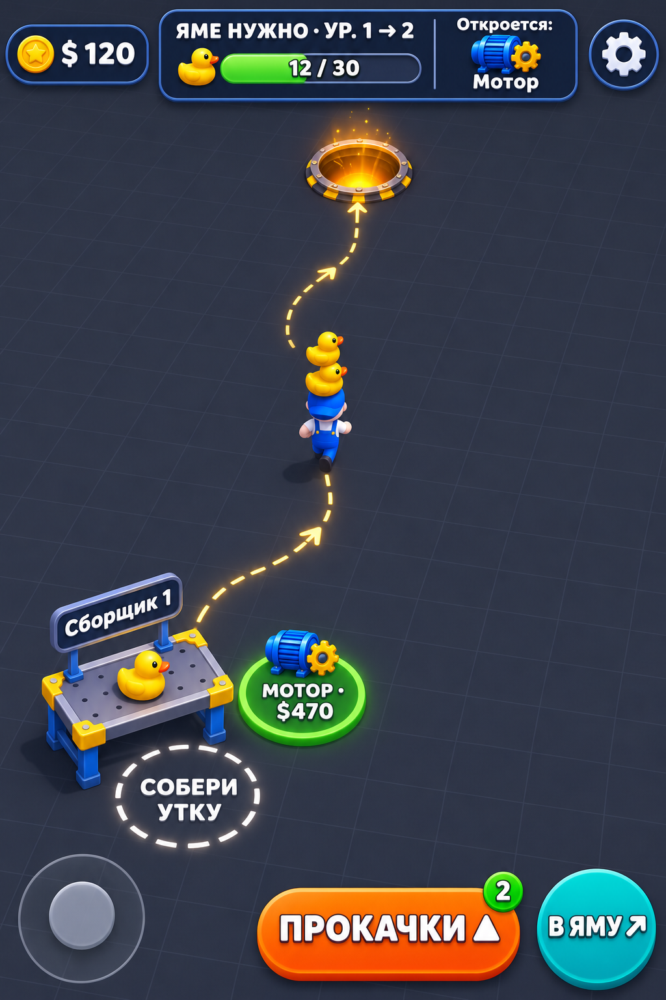
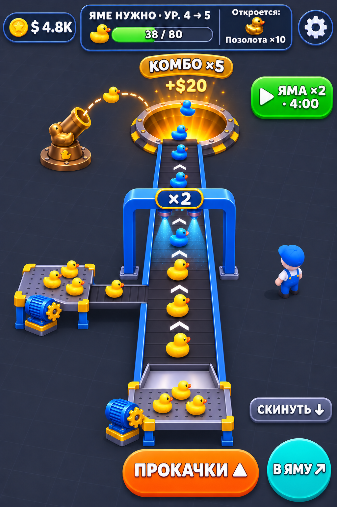
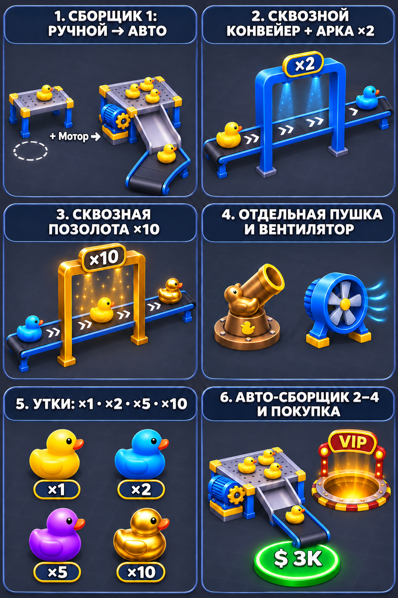
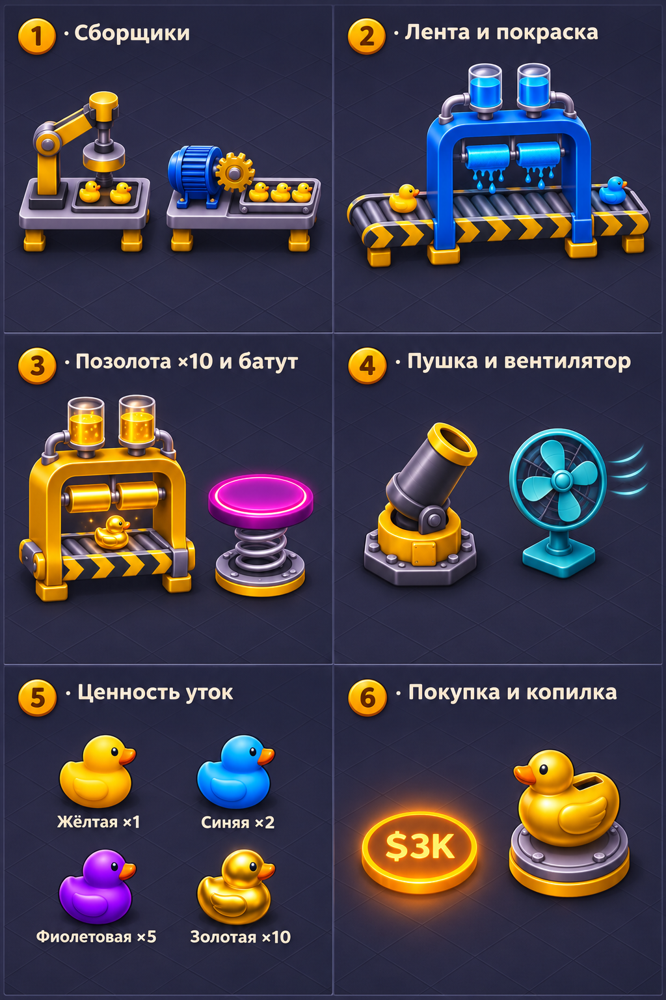
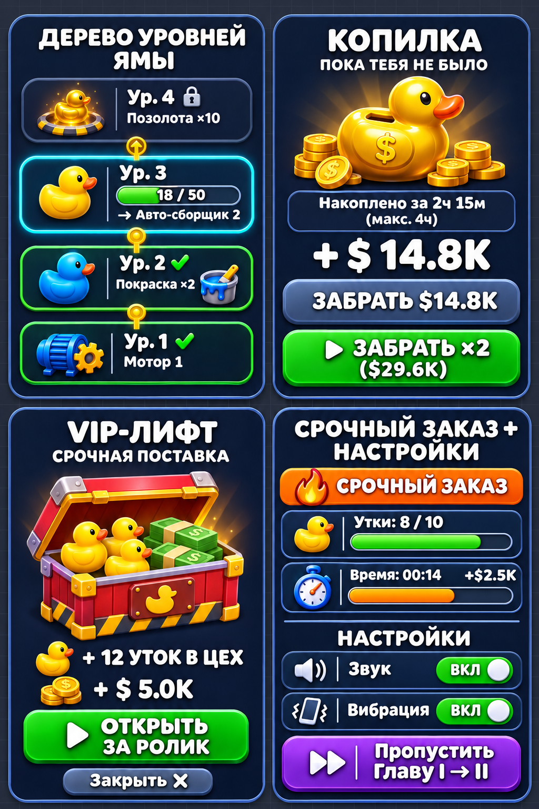

«Одна Яма» — Поэтапная прогрессия без каши в кадре, Рабочий сквозной конвейер, Сборщики по ГД и Все Менюшки
Вместо того чтобы лепить 20 мелких деталей на один игровой экран, мы разделили концепт на понятные этапы прогрессии (Старт игры → Рабочая линия конвейера → Полный цех), полностью переделали 3D-элементы со сквозным конвейером без упора в стену и без табличек на столах, ответили по геймдизайну про Сборщики 1–4 и собрали единый UI-кит всех менюшек игры без визуального шума. Все рендеры выполнены через приоритетный Codex (gpt-image-2).
1. Игровой экран по этапам прогрессии + Фокус на чистый игровой HUD (Codex gpt-image-2)
По твоему фидбеку убрали кашу из одного перегруженного скриншота: показываем отдельно Этап 1 (Первые 90 секунд + чистый игровой HUD) и Этап 2 (Первая автоматизация + прямой рабочий конвейер в Яму без единой перегородки).

S1a)- 70%+ свободного пола Темы B (
#2D323E): много воздуха под палец и джойстик, ничего не мешает глазу. - Сборщик 1 начинает РУЧНЫМ: перед ним белый пунктирный круг
СОБЕРИ УТКУ, от которого идёт светящаяся пунктирная стрелка-гид прямо к Яме. - Только 1 кружок следующей покупки на полу:
МОТОР · $470(никаких 8 кружков одновременно!). - Эталонный верхний HUD без дублей: слева
$ 120, по центру широкая карточкаЯМЕ НУЖНО · УР. 1 → 2 (12/30)с ячейкой наградыОткроется: Мотор, справа⚙️. На самой Яме в 3D-мире убрана дублирующая табличка12/30!

S1b)- Никаких табличек на построенных 3D-столах: как только верстак построен, над ним нет никаких синих вывесок «Сборщик 1» или «Покраска».
- Идеальная механика конвейера без бортиков на стыке:
1) Нижний Сборщик 1 (уже с синим Мотором) стоит прямо в начале главной ленты и открытым скатом подаёт уток на старт чёрного полотна;
2) Боковой Авто-сборщик 2 врезается в главную ленту открытым Т-образным стыком (в синем бортике проём, чёрная лента сливается с чёрной лентой без жёлтых заглушек!);
3) Посередине стоит сквозная П-образная синяя арка×2(опоры снаружи ленты, без слова «Покраска»);
4) Верхний конец ленты открыто нависает над Ямой и сбрасывает синих уток прямо внутрь! - Отдельная Пушка слева: не связана с лентой, сама стреляет утками по дуге в Яму.
2. Переделанные 3D-элементы цеха на полу: сквозной конвейер без упора в стену (Codex gpt-image-2)
Ты абсолютно точно заметил косяк прошлого рендера: «элементы переделать, потому что конвейер блять нерабочий у тебя — там в стену упор». В прошлой карточке у золотой арки ×10 были глухие жёлтые стенки поперёк ленты, а на столах — закрытые корыта. Ниже — полностью переделанный каталог v2 Fixed (слева) и старый вариант (справа) для наглядности.

- 1. Сборщик 1 (Ручной → Авто): слева чистый ручной верстак с кругом на полу (без таблички на ножках!), стрелка
+ Мотор →, справа — он же после покупки Мотора: сбоку крутится синий мотор с шестерёнкой, а спереди по открытому скату утка съезжает на открытую роликовую ленту без жёлтых заглушек. - 2. Сквозной конвейер + Арка
×2: опоры синей арки стоят на полу СНАРУЖИ бортиков конвейера, вход и выход полностью открыты, чёрная лента>>идёт насквозь, жёлтая утка въезжает слева и выезжает синей справа. - 3. Сквозная Позолота
×10(ИСПРАВЛЕНО!): убраны глухие жёлтые стенки! Теперь это высокий сквозной золотой портал на внешних стойках — чёрная лента с шевронами беспрепятственно проходит насквозь, превращая утку в блестящую золотую 24К. - 4. Отдельная Пушка и Вентилятор: бронзовая мортира + синий турбо-вентилятор.
- 5. Утки
×1 · ×2 · ×5 · ×10: жёлтая, синяя, фиолетовая и настоящее металлическое золото×10. - 6. Авто-сборщик 2–4 и покупка: готовый авто-сборщик с открытым выходом на ленту + кружок
$ 3K+ люкVIP.

- Видно, почему ты его забраковал: в карточке #3 (Позолота ×10) золотая будка перегораживала конвейер глухими жёлтыми металлическими стенками с обеих сторон («упор в стену»), а в #1 (Сборщики) утки падали в закрытые железные корыта без выхода на ленту. В новой версии слева оба бага полностью устранены.
3. Полный UI всех менюшек и попапов игры в едином стиле (Codex gpt-image-2)
Все интерфейсы игры приведены к единому чистому стилю карточек #192236 с голубой рамкой #4A6596: Лист «Прокачки» (слева) и Кит остальных 4 менюшек и попапов (справа — Дерево уровней Ямы, Копилка, VIP-лифт, Срочный заказ + Настройки).

- Разделение «Мир vs Меню»: физические постройки (Сборщики, Покраска, Пушка) покупаются только кружками на полу в мире, а в этом меню живут только бесконечные статы (Доход за утку, Комбо, Моторы, Скорость ленты, Скорость и Стопка героя).
- Дорожка наград вместо «🔒 Яма шире»: 4 понятные карточки вех в шапке.
- Наглядная плашка ценности уток:
Обычная $20 (×1) | Синяя $40 (×2) | Фиолет $100 (×5) | Золотая $200 (×10).

- 1. Дерево уровней Ямы (вверху слева, по тапу на верхний бар): вертикальная прогрессия снизу вверх (
Ур. 1 ✔ Мотор 1→Ур. 2 ✔ Покраска ×2→ активныйУр. 3 [18/50] → Авто-сборщик 2→ закрытыйУр. 4 🔒 Позолота ×10). - 2. Копилка «Пока тебя не было» (вверху справа): золотая копилка-утка, таймер
2ч 15м (макс. 4ч), сумма+ $ 14.8Kи две чёткие кнопки:ЗАБРАТЬ $14.8Kили▶ ЗАБРАТЬ ×2 ($29.6K). - 3. VIP-лифт «Срочная поставка» (внизу слева): открытый красно-золотой ящик с утками и пачками баксов (
+ 12 УТОК В ЦЕХ,+ $ 5.0K) за просмотр ролика. - 4. Срочный заказ + Настройки (внизу справа): компактный оранжевый баннер с 2 полосками (
Утки: 8/10иВремя: 00:14 · +$2.5K) + чистое окно Настроек (Звук,Вибрацияи фиолетовая dev-кнопка⏭ Пропустить Главу I → II).
4. Геймдизайн-разбор: как правильно устроить Сборщики и что вырезаем как визуальный шум
Ответ на твой вопрос: «сборщик вроде как один должен быть сначала ручной, а потом прокачивается в автоматический, ведь так? или у нас там только 1 ручной и остальные автоматические покупаем? как лучше по геймдизайну» + полная таблица чистки UI.
-
Сборщик 1: СНАЧАЛА РУЧНОЙ → ПРОКАЧИВАЕТСЯ В АВТОМАТИЧЕСКИЙ (+ сохраняет точку ручного буста):
• В первые 90 секунд игры (FTUE) игрок стоит в белом кругу у Сборщика 1, собирает утку руками за1,5 секи несёт в Яму — это даёт физическое ощущение ценности каждой утки.
• Первая же покупка на полу (Мотор 1 · $470) ставит синий электромотор прямо на этот же Сборщик 1 — и он начинает сам штамповать уток на конвейер! Это главный дофаминовый кайф первых двух минут («Оно заработало само!»).
• При этом круг ручной сборки у Сборщика 1 остаётся активным: авто-мотор даёт утку раз в6–10 сек, но если игрок сам встанет в круг, он дособирает уток вручную за1,5 сек(активный буст во время Срочного заказа и Комбо, как ты и решил в голосовом от 02.11, п. 4). -
Сборщики 2, 3, 4: ПОКУПАЮТСЯ СРАЗУ АВТОМАТИЧЕСКИМИ (с мотором и подающей лентой!):
• Сейчас в коде покупка Сборщиков 2, 3 и 4 заставляет игрока сначала купить пустой стол, потом отдельно купить к нему мотор и отдельно кусок ленты (отсюда твоя же боль вnext-batch-maxim.mdп. 9: «я открыл 3 и 4 сборщик — и где, сука, ленты купить сразу к ним?» и п. 97: «после третьего стола подустал»).
• В геймдизайне покупка, которая за твои деньги даёт+0к доходу, пока не купишь ещё две запчасти, называется Dead Purchase («мёртвая покупка»).
• Поэтому Сборщик 1 учит переходу «Ручной → Мотор», а Сборщики 2, 3 и 4 продаются на полу сразу как готовыеАвто-сборщики 2 / 3 / 4— купил за один тап, и он в ту же секунду с мотором и боковой лентой гонит поток уток в общую магистраль!
Таблица геймдизайнерской ревизии всех экранов (Что нужно vs Что лишний шум)
| Экран / Зона | ✅ ЧТО ОСТАВЛЯЕМ В ФОКУСЕ (Нужно для геймплея) | ❌ ЧТО УБИРАЕМ НАВСЕГДА (Лишний визуальный шум) |
|---|---|---|
1. Верхний HUD и Яма (S1) |
• Слева: плашка денег $ 120.• По центру: широкая карточка ЯМЕ НУЖНО · УР. 1 → 2 с прогресс-баром 12 / 30 🦆 и окном награды Откроется: [Мотор].• Справа: круглая кнопка ⚙️.• На самой Яме в 3D: только золотой бейдж КОМБО ×5 и вылетающие +$20. |
❌ Вторая дублирующая табличка 12/30 прямо на ободке Ямы в 3D-мире (спорит с верхним баром и перекрывает летящих уток).❌ Отдельный виджет Комбо в углу экрана (комбо должно жить прямо над Ямой, куда падают утки). |
| 2. Пол цеха и 3D-постройки | • На старте — только Сборщик 1, стрелка-гид на полу и 1 кружок ближайшей покупки (МОТОР · $470).• По мере роста — максимум 1–2 доступных кружка покупки на полу одновременно. • Чистые 3D-модели станков, арок ×2 / ×10 и открытых конвейеров. |
❌ Синие таблички с текстом «Сборщик 1», «Авто-сборщик», «Покраска» на ножках над построенными 3D-объектами! Построили — и ладно, игрок и так видит станок. ❌ Рабочий стол в центре зала и «Слой 2» — удалены полностью. ❌ Сразу 7–10 серых кружков будущих покупок на полу. |
| 3. Нижняя зона и рекламные кнопки | • Внизу по центру: полупрозрачное кольцо джойстика + свободные 22–25% пола. • Справа внизу (под большой палец): ПРОКАЧКИ ▲, В ЯМУ ↗, СКИНУТЬ ↓.• У правого края: не более 1 аккуратной зелёной кнопки бонуса за ролик ( ▶ ЯМА ×2 · 4:00). |
❌ Кнопка Автосброс в боевом HUD.❌ Гирлянда из 3–4 рекламных баннеров по обоим краям экрана. ❌ Огромные всплывающие тосты «КУПЛЕНО!» по центру экрана. |
4. Лист «Прокачки» (S2) и Менюшки (S3–S7) |
• В «Прокачках» — только статы и множители + схема уток ×1 | ×2 | ×5 | ×10.• По тапу на верхний бар — Дерево уровней Ямы снизу вверх. • При входе после паузы — Копилка. • При тапе на люк — VIP-посылка. • В Срочном заказе — компактный баннер с 2 полосками (утки + таймер). |
❌ Покупка физических зданий внутри меню «Прокачки» (здания строятся только на полу!). ❌ Непонятные подписи «После главы: 🔒 Яма шире» и «Дальше: Цена утки — ещё 44 утки в Яму». ❌ Отдельное меню выбора глав поверх окна Настроек. |
5. Сводка по генераторам: почему Codex (gpt-image-2) закреплён в Global Rules как Приоритет №1
Краткая выжимка из нашего исследования бенчмарков (правило уже прописано в ~/agent-rules/global.md для всех тредов).
| Параметр / Бенчмарк | Codex imagegen (OpenAI gpt-image-2) — ПРИОРИТЕТ №1 |
Antigravity generate_image (gemini-3.1-flash-image / Nano Banana 2) |
|---|---|---|
| Класс модели | Тяжёлый флагман OpenAI ($0.21/кадр) | Лёгкая урезанная Flash-модель ($0.067/кадр) |
| LMArena Overall / 3D Game Assets | 1383 Elo (Топ-3 мира) / 1363 Elo в 3D | 1257 Elo (~10-е место) / 1255 Elo в 3D (-108..126 Elo) |
| GraduallyBench (Форма персонажа, уток и станков) | 89 / 100 (цельный герой, чёткие конвейеры и утки) | 36 / 100 (персонаж-картошка, кривые трубы на заводах) |
| Где используем по Global Rules | 100% игровых экранов, цехов, конвейеров, уток, персонажей и чистового UI (при обязательной проверке глазами Аргона после рендера!) | Только для быстрых плоских схем/чертежей (GenExam 68%) или черновых прикидок за 15 сек |
6. Твой текстовик (пиши в свободной форме — скопируй и скинь мне)
Обычный текстовик с автосохранением в браузере. Напиши, как тебе новые поэтапные экраны (Этап 1 и Этап 2), исправленный сквозной конвейер v2, кит всех менюшек и схема Сборщиков (1-й ручной → мотор, 2–4 сразу авто).